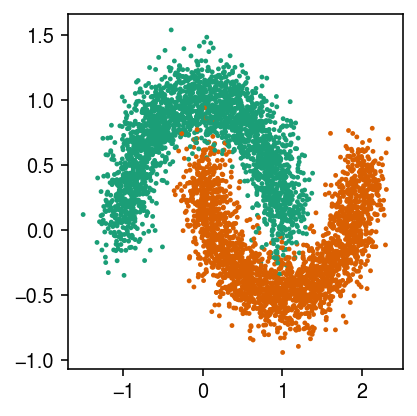
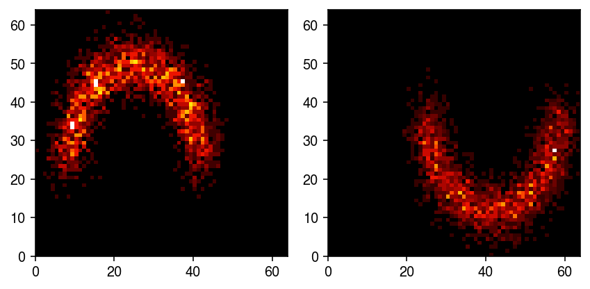
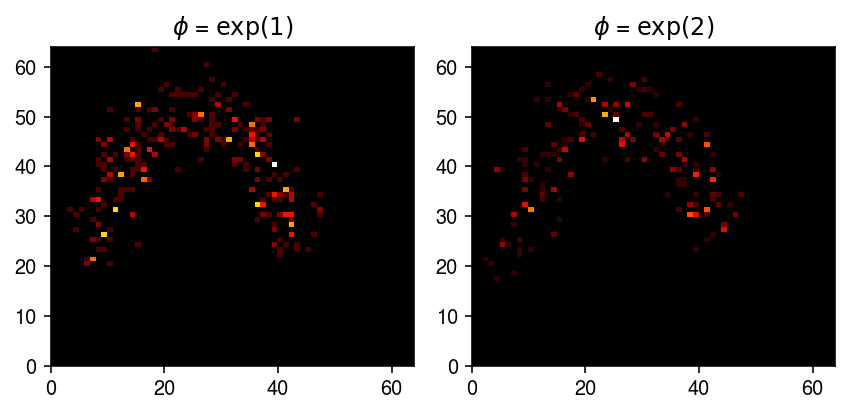
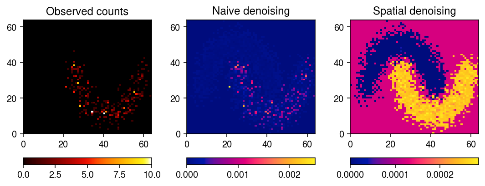

GOM model for spatial transcriptomic data
Table of Contents
Introduction
Lee and Seung 1999 described how (Poisson) non-negative matrix factorization (NMF) can be used to learn “parts” of faces/semantic concepts that combine additively to generate observed images/text. Here, we investigate the use of NMF to learn spatial structures from spatial transcriptomic data (Ståhl et al. 2016, Vikovic et al. 2019, Rodriques et al. 2019).
Setup
import numpy as np import pandas as pd import scipy.sparse as ss import scipy.stats as st import scmodes import sklearn.datasets as skd
import rpy2.robjects.packages import rpy2.robjects.pandas2ri rpy2.robjects.pandas2ri.activate() matrix = rpy2.robjects.packages.importr('Matrix') fasttopics = rpy2.robjects.packages.importr('fastTopics')
%matplotlib inline %config InlineBackend.figure_formats = set(['retina'])
import colorcet import matplotlib.pyplot as plt plt.rcParams['figure.facecolor'] = 'w' plt.rcParams['font.family'] = 'Nimbus Sans'
Results
Planted spatial signal
Generate an interesting spatial pattern.
X, y = skd.make_moons(n_samples=5000, noise=0.15, random_state=1)
cm = plt.get_cmap('Dark2') plt.clf() plt.gcf().set_size_inches(3, 3) plt.scatter(X[:,0], X[:,1], s=2, c=cm(y)) plt.tight_layout()

Bin the samples to get spots.
n_bins = 64 t = [[X[:,0].min(), X[:,0].max()], [X[:,1].min(), X[:,1].max()]] H0, *_ = np.histogram2d(X[y == 0,0], X[y == 0,1], bins=n_bins, range=t, density=True) H1, *_ = np.histogram2d(X[y == 1,0], X[y == 1,1], bins=n_bins, range=t, density=True)
cm = colorcet.cm['fire'] plt.clf() fig, ax = plt.subplots(1, 2) fig.set_size_inches(6, 3) ax[0].pcolormesh(H0.T, cmap=cm) ax[1].pcolormesh(H1.T, cmap=cm) plt.tight_layout()

Treat the spots as the true \(\lambda\), and generate example noisy observations.
np.random.seed(2) x0 = st.nbinom(n=np.exp(-1), p = 1 / (1 + H0 / np.exp(-1))).rvs() x1 = st.nbinom(n=np.exp(-2), p = 1 / (1 + H0 / np.exp(-2))).rvs()
cm = colorcet.cm['fire'] plt.clf() fig, ax = plt.subplots(1, 2) fig.set_size_inches(6, 3) ax[0].pcolormesh(x0.T, cmap=cm) ax[0].set_title('$\phi$ = $\exp(1)$') ax[1].pcolormesh(x1.T, cmap=cm) ax[1].set_title('$\phi$ = $\exp(2)$') plt.tight_layout()

Generate a training data set.
p = 8192 z = np.random.uniform(size=n) < 0.5 log_inv_disp = np.random.uniform(-3, 0, size=p) x = np.stack([ st.nbinom(n=np.exp(phi_j), p=1 / (1 + H0 / np.exp(phi_j))).rvs() if z_j else st.nbinom(n=np.exp(phi_j), p=1 / (1 + H1 / np.exp(phi_j))).rvs() for z_j, phi_j in zip(z, log_inv_disp)])
# Important: this needs to be reshaped and transposed in this order temp = ss.coo_matrix(x.reshape(p, -1).T) y = matrix.sparseMatrix( i=pd.Series(temp.row + 1), j=pd.Series(temp.col + 1), x=pd.Series(temp.data), dims=pd.Series(temp.shape))
fits = {k: fasttopics.fit_poisson_nmf(y, k=k, numiter=60, method='scd', control=rpy2.robjects.ListVector({'extrapolate': True}), verbose=True) for k in (2, 4, 8)}
Compare spatial denoising to naive denoising.
s = x.sum(axis=0) fit0 = scmodes.ebpm.ebpm_gamma(x[0].ravel(), s.ravel(), tol=1e-7) pm0 = np.where(s > 0, (x[0] + np.exp(fit0[1])) / (s + np.exp(fit0[1] - fit0[0])), 0)
lam = fits[4].rx2('L') @ fits[4].rx2('F').T
plt.clf() fig, ax = plt.subplots(1, 3) fig.set_size_inches(7.5, 3) im = ax[0].pcolormesh(x[0].T, cmap=colorcet.cm['fire']) ax[0].set_title('Observed counts') fig.colorbar(im, ax=ax[0], orientation='horizontal') im = ax[1].pcolormesh(pm0.T, cmap=colorcet.cm['bmy']) ax[1].set_title('Naive denoising') fig.colorbar(im, ax=ax[1], orientation='horizontal') im = ax[2].pcolormesh(lam[:,0].reshape(n_bins, n_bins).T, cmap=colorcet.cm['bmy']) ax[2].set_title('Spatial denoising') fig.colorbar(im, ax=ax[2], orientation='horizontal') plt.tight_layout()

Visium
Read the pre-processed data.
dat = anndata.read_h5ad('/project2/mstephens/aksarkar/projects/singlecell-ideas/data/spatial/V1_Breast_Cancer_Block_A_Section_1/dat.h5ad') sc.pp.filter_genes(dat, min_cells=10)